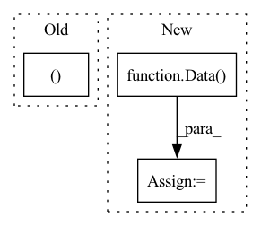

Pattern ID :41457
Before Change
assert pos.shape == (z.shape[0], 3)
assert conf["formation_energy"].attrs["units"] == "eV"
y = pt.tensor(conf["formation_energy"][() ], dtype=pt.float64)
assert y.shape == ()
assert conf["forces"].attrs["units"] == "eV/Å"After Change
)
if mol_ids:
args["mol_id"] = mol_id
data = Data(**args)
if self.pre_filter is not None and not self.pre_filter(data):
continue
In pattern: SUPERPATTERN
Frequency: 4
Non-data size: 3
Instances Fragment ID: 116551362
Project Name: torchmd/torchmd-net
Commit Name: d23e6500f2cef1fa56d6c99ce5fdb983f1379bca
Time: 2022-10-28
Author: peastman@stanford.edu
File Name: torchmdnet/datasets/ace.py
M Class Name: Ace
N Class Name: Ace
M Method Name: sample_iter(2)
N Method Name: sample_iter(1)
M Parent Class: Dataset
N Parent Class: Dataset
M File Name: torchmdnet/datasets/ace.py
N File Name: torchmdnet/datasets/ace.py
M Start Line: 72
M End Line: 123
N Start Line: 144
N End Line: 206
Before Change
self.setup_index()
if self.has_forces:
types, pos, energy, forces, i = self.index[idx]
return Data(
pos=torch.from_numpy(pos[i]),
z=torch.from_numpy(types[i]).to(torch.long),After Change
entry = self.index[idx]
i = entry[-1]
data = Data()
for j, field in enumerate(self.fields):
d = entry[j]
if d.ndim == 1:
data[field[0]] = torch.tensor([[d[i]]], dtype=field[2]) Fragment ID: 116551360
Project Name: torchmd/torchmd-net
Commit Name: 4f761a504205f9e12b850b7345df91d275f45a03
Time: 2022-12-02
Author: peastman@stanford.edu
File Name: torchmdnet/datasets/hdf.py
M Class Name: HDF5
N Class Name: HDF5
M Method Name: get(2)
N Method Name: get(2)
M Parent Class: Dataset
N Parent Class: Dataset
M File Name: torchmdnet/datasets/hdf.py
N File Name: torchmdnet/datasets/hdf.py
M Start Line: 70
M End Line: 86
N Start Line: 74
N End Line: 83
Before Change
if self.target_transform:
labels = self.target_transform(labels)
return cloud, labels
class LidarValDataset(IterableDataset):
def __init__(After Change
labels = self.target_transform(labels)
// TODO: consider moving up the use of Data structure for the transforms to be used on it.
data = Data(pos=cloud[:, :3], x=cloud, y=labels)
return data
Fragment ID: 116551367
Project Name: ignf/lidar-deep-segmentation
Commit Name: 5647e533eead0ce210355401bc6f246734221d14
Time: 2021-09-23
Author: charles.gaydon@gmail.com
File Name: semantic_val/datamodules/datasets/lidar_dataset.py
M Class Name: LidarTrainDataset
N Class Name: LidarTrainDataset
M Method Name: __getitem__(2)
N Method Name: __getitem__(2)
M Parent Class: Dataset
N Parent Class: Dataset
M File Name: semantic_val/datamodules/datasets/lidar_dataset.py
N File Name: semantic_val/datamodules/datasets/lidar_dataset.py
M Start Line: 70
M End Line: 70
N Start Line: 66
N End Line: 68
Before Change
if self.target_transform:
labels = self.target_transform(labels)
yield cloud, labels
def __iter__(self):
return self.process_data()
After Change
labels = self.target_transform(labels)
// TODO: consider moving up the use of Data structure for the transforms to be used on it.
data = Data(pos=cloud[:, :3], x=cloud, y=labels)
yield data
def __iter__(self): Fragment ID: 116551368
Project Name: ignf/lidar-deep-segmentation
Commit Name: 5647e533eead0ce210355401bc6f246734221d14
Time: 2021-09-23
Author: charles.gaydon@gmail.com
File Name: semantic_val/datamodules/datasets/lidar_dataset.py
M Class Name: LidarValDataset
N Class Name: LidarValDataset
M Method Name: process_data(1)
N Method Name: process_data(1)
M Parent Class: IterableDataset
N Parent Class: IterableDataset
M File Name: semantic_val/datamodules/datasets/lidar_dataset.py
N File Name: semantic_val/datamodules/datasets/lidar_dataset.py
M Start Line: 118
M End Line: 118
N Start Line: 115
N End Line: 117